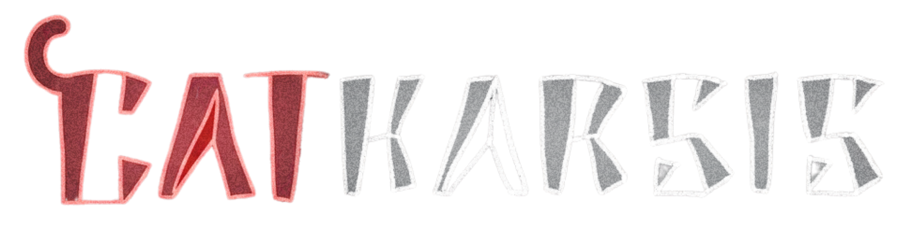
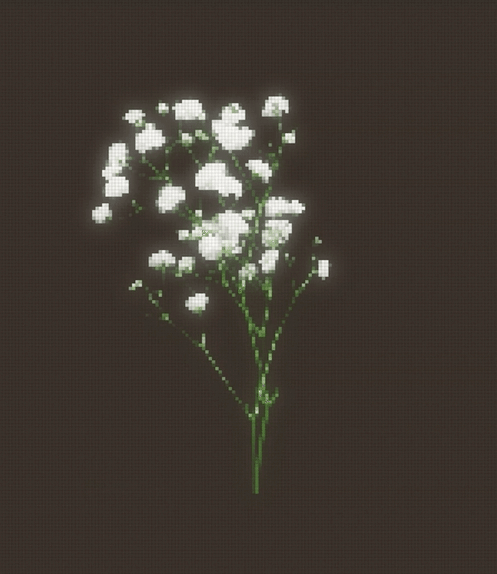

A game by:
Pau Cortez Balvanera, María Espínola & Ilan Hanenberg (Supernova Team)
Supervisors:
Gilberto Echeverría Furió, Esteban Castillo Juarez, & José Ángel Martínez Navarro
Catharsis is a rougelite videogame presented in top-down perspective in 2D with a pixely artstyle, where you take the role of a little cat that comes to a new village and discovers his neighbours are behaving quite strange, just to learn that at night they are turning into monsters. He slowly discovers some new cards across the town that will help him protect himself and his new home. You will randomly explore the different houses of your neighbours, use your cards to save them and protect yourself, and find what is happening around the village. Every time you get to heal your neighbours you will obtain experience points that will help us keep developing the story and obtain better cards that will increase your abilities to fight, defend, heal and control your neighbours. Giving the monster random abilities every night that forces you to think about how to defend yourself without harming them. Learning more about what is the secret behind the way of how your neighbours are behaving.
